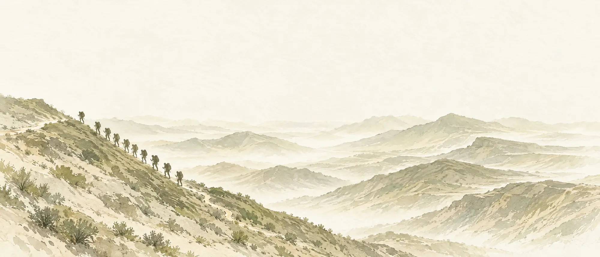
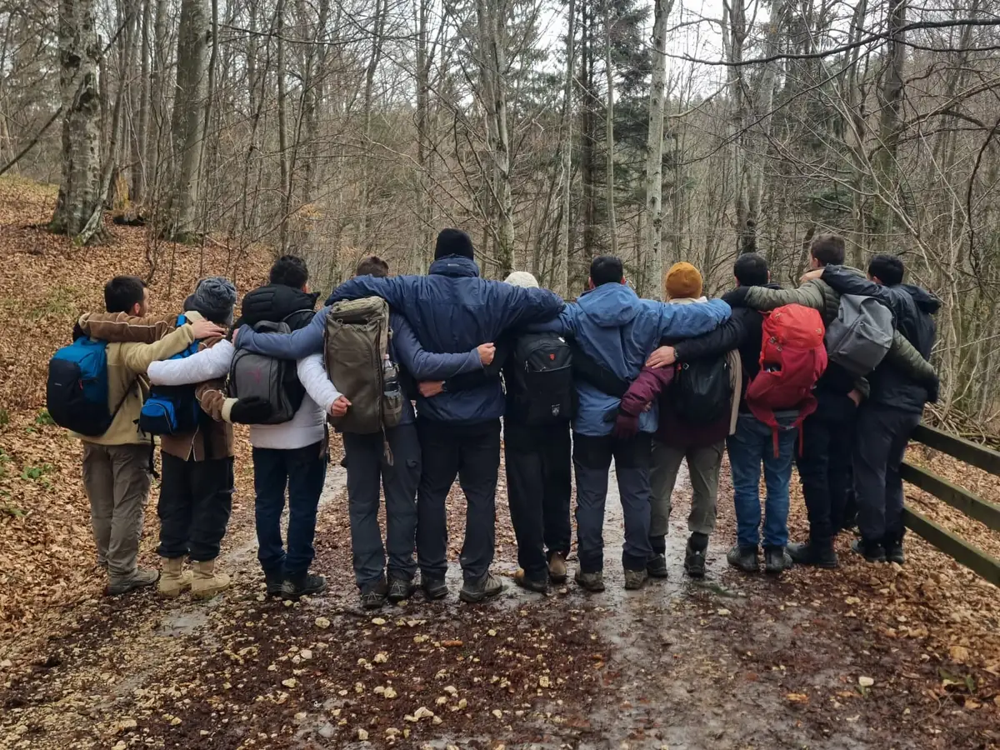
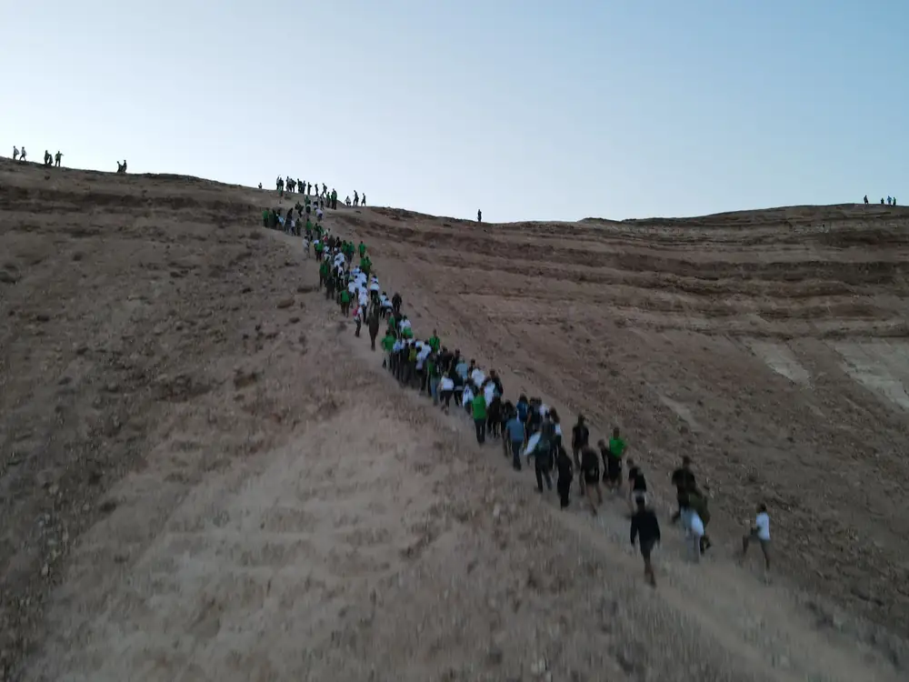
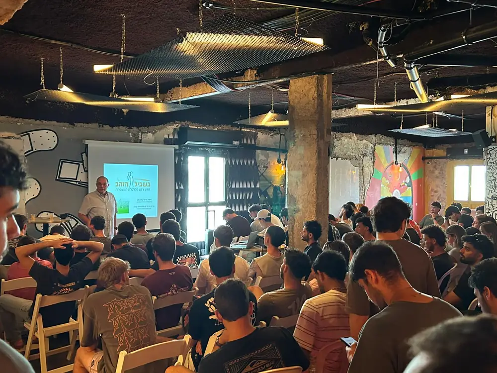
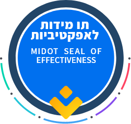
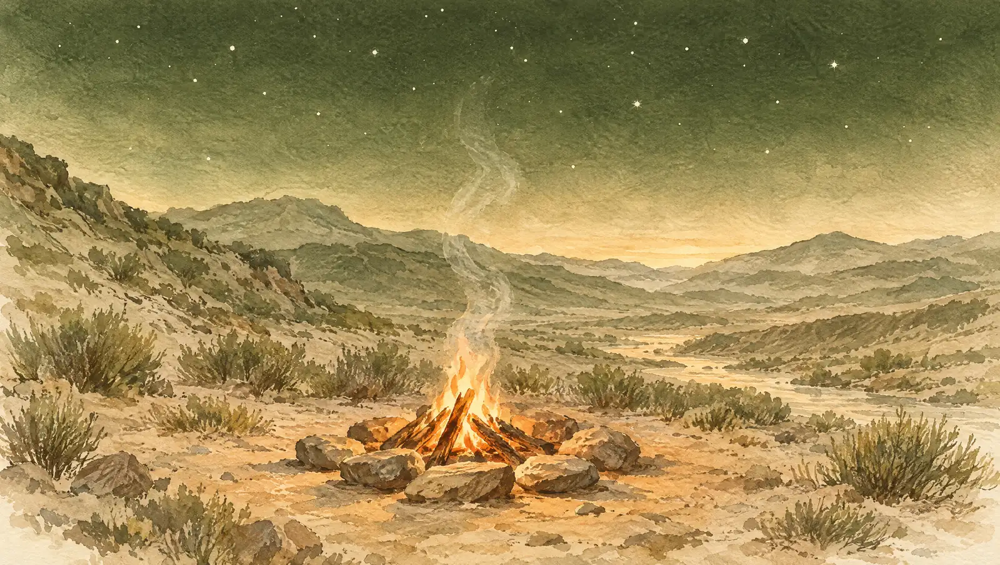
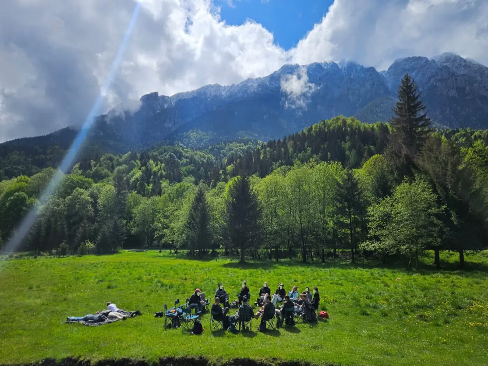

חוסן נפשי וטראומה קרבית
לרפא את הפצעים שלא רואים
צוות של 15 עד 20 לוחמים שלחמו יחד יוצא למסע עיבוד, בליווי אנשי מקצוע.
400+בוגרים ובני משפחה בליווי בכל שנה
עמותת בוגרי סיירת נח"ל
איפה שהתמיכה הרשמית נגמרת או לא רלוונטית, אנחנו מתחילים. מעל 30 שנה של פעילות למען הבוגרים, המשפחות השכולות, הפצועים ובני משפחותיהם. חברות ישראליות מוזמנות לאמץ צוות: לממן מסע חוסן לצוות לוחמים שלם.
Donating from abroad?

איורלמה עכשיו
+150%
עלייה של למעלה מ-150% בביקוש לטיפול נפשי. והקושי לא נגמר עם הלחימה: לפעמים דווקא בשגרה, חודשים אחרי, החוויות מתחילות לצוף.
25 צוותים כבר משובצים למסעות ב-2027. בשנה הקרובה העמותה צריכה להיות שם בשביל כולם, וזה תלוי במימון.
מקור: נתוני העמותה, 2026.
במדים
בשירות לומדים לשאת את המשא, ולא לבקש עזרה.
אחרי המדים
הטראומה, הבדידות והקושי הכלכלי לא נגמרים ביום השחרור. ולפעמים דווקא בשגרה חוויות הלחימה מתחילות לצוף.
מסע חוסן
במסע חוסן, צוות של 15 עד 20 לוחמים נפגש מחדש, יושב יחד במעגל, בליווי אנשי מקצוע.

צילום ממסע חוסן צוותילחברות ישראליות
צוות של 15 עד 20 לוחמים ששירתו יחד יוצא למסע חוסן, בליווי אנשי מקצוע ובהתאמה לצרכיו. הזדמנות לתת למי שהיו שם יחד את המקום לעבד, להתחזק ולהמשיך יחד. חברה מאמצת מממנת מסע מלא, או משתתפת במימון.
58 צוותים כבר עברו מסע חוסן משנה חיים ב-2025 וב-2026, ו-25 צוותים נוספים כבר משובצים ל-2027. כל מסע שממומן מאפשר לצוות נוסף לצאת לדרך.
אמצו צוות. היו שותפים בחלק משמעותי מהדרך שלו קדימה.
טלפון: 050-734-7952 · מייל: hezki.m@gmail.com
מי אנחנו
אנחנו מכירים את האנשים שמאחורי השמות, את הצוותים ואת הדרך שעברו יחד. ההיכרות הזאת מאפשרת לנו לזהות גם קושי שלא נאמר בקול, להרים טלפון למי שלא יבקש עזרה, ולבנות את האמון שבלעדיו קשה להתחיל.
כי לפעמים, כדי להסכים לקבל עזרה, צריך שמישהו שמכיר אותך יושיט יד.
סיירת נח"ל היא יחידת עילית בחטיבת הנח"ל. את העמותה הקים סא"ל אייל וייס ז"ל, לשעבר מפקד הסיירת. אחרי 7 באוקטובר, עמותות הבוגרים של היחידה התאחדו לעמותה אחת.
את העמותה מנהלים 6 חברי ועד מתנדבים ומנכ"ל במשרה חלקית, סא"ל (מיל.) חזקי מלאכי.
חוסן נפשי אינו מותרות. זו אחריות כלפי מי שיצאו שוב ושוב להגן על כולנו, וכלפי המשפחות שממשיכות ללוות אותם הרבה אחרי שהקרב מסתיים.


מה אנחנו עושים
לכל עמוד יעד ותקציב משלו. כך נראית העבודה בשטח.
חוסן נפשי וטראומה קרבית
צוות של 15 עד 20 לוחמים שלחמו יחד יוצא למסע עיבוד, בליווי אנשי מקצוע.
400+בוגרים ובני משפחה בליווי בכל שנה
רווחה ומשפחות
ליווי אישי לפצועים ולמשפחותיהם כל עוד צריך, תמיכה במשפחות של חללי היחידה, ועזרה למשפחות מילואימניקים בזמן גיוסים ארוכים.
108חללי היחידה מאז הקמתה
קריירה וחיים אחרי השירות
מפגשים עם מובילים מעולמות ההייטק וההשקעות, מחזורי מנטורינג ומענקי הכשרה, ו-3 סדנאות שחרור בשנה שנותנות ליותר מ-200 משוחררים כלים לקריירה ולכסף.
650+בוגרים בשנה
לוחמים בודדים · יוזמה חדשה
לוחמים בודדים משרתים בלי משפחה בארץ, וביום השחרור רשת הביטחון נעלמת. היוזמה: משפחה מאמצת, מנטור אישי וקהילה תומכת.
5שנות ליווי בחיים האזרחיים
הנתונים מתוך מצגת העמותה לשנת 2026.
שקיפות
תקציב 2026: כ-2.85 מיליון ₪. לכל תחום תקציב משלו. אפשר לייעד את התרומה, או להשאיר לוועד להחליט איפה הצורך הכי גדול.
תפעול והוצאות אחרות: כ-9.5% מהתקציב. השאר הולך ישירות לתוכניות.
מקור: מצגת העמותה, תקציב 2026.

העמותה זכתה בתו מידות לאפקטיביותבתוקף עד 03/2028 · לאימות באתר מידותתרומה
תרומה חודשית עוזרת לעמותה לתכנן קדימה: עוד מסע, עוד משפחה, עוד בוגר. אפשר להתחיל מסכום חודשי קטן ולהפסיק בכל עת. גם תרומה חד-פעמית עוזרת.
35% חוזרים אליכם. לפי סעיף 46, יחיד מקבל זיכוי ממס של 35% מסכום התרומה: תרומה של ₪1,000 עולה לכם בפועל כ-₪650. בכפוף לתנאי הסעיף. תרומה עד 31.12 נכנסת לשנת המס הנוכחית.
הסכומים לפי תקציב העמותה. אפשר לתרום כל סכום, ואת הסכום מזינים בעמוד התשלום.
התרומה עוברת לקמפיין "חוסן נפשי – מסעות עיבוד צוותיים" של העמותה ב-Jgive. הוראת קבע אפשר להפסיק בכל עת.
אפשר לתרום גם דרך AID Coalition, ארגון אמריקאי בסטטוס 501(c)(3), בצ'ק, בהעברה או מקרן תרומות (DAF).
שאלות נפוצות
לפעילות העמותה, לפי התקציב שלמעלה. אפשר לציין תחום בשדה ההערה בעמוד התשלום. בלי ציון, הוועד מחליט איפה הצורך הכי גדול.
כן. בעמוד התשלום של Jgive בוחרים "הוראת קבע". אפשר להפסיק בכל עת מהחשבון האישי ב-Jgive.
התשלום מתבצע ב-Jgive, פלטפורמת תרומות ישראלית. פרטי הכרטיס לא עוברים לעמותה.
כן. לעמותה אישור לפי סעיף 46, בתוקף עד 31.12.2027, והקבלה נשלחת במייל.
כן. פרטי החשבון מופיעים באזור התרומה. אחרי ההעברה כתבו לנו, ונשלח קבלה לפי סעיף 46.
כן. ב-Jgive בוחרים מטבע, ולפי Jgive הקבלה נקבעת לפיו: בדולרים קבלה אמריקאית, בליש"ט קבלה בריטית ובדולר קנדי קבלה קנדית. תורמים מארה"ב יכולים לתרום גם דרך AID Coalition, ארגון אמריקאי בסטטוס 501(c)(3). הכללים משתנים ממדינה למדינה, ולכן כדאי לוודא מול יועץ המס.
בוגרי היחידה: 6 חברי ועד מתנדבים ומנכ"ל במשרה חלקית, סא"ל (מיל.) חזקי מלאכי. העמותה פועלת כבר מעל 30 שנה.

הם שמרו עלינו. עכשיו תורנו לשמור עליהם. ההחלמה צריכה להתחיל עכשיו, והביקוש לטיפול גדל מהר יותר מהיכולת שלנו לתת אותו.
Sayeret Nahal Alumni Association
We are the alumni of an elite Israeli reconnaissance unit. Where official support ends or doesn't fit, we begin. More than 30 years of work for the unit's veterans, bereaved families, and the wounded and their families. Giving from abroad? Jgive and the AID Coalition issue tax receipts for donors outside Israel.
Israeli company?
Why now
+150%
Demand for mental health care has risen by more than 150%. And it does not end with the fighting: often it is months later, back in everyday life, that the experiences begin to surface.
25 teams are already scheduled for journeys in 2027. In the coming year the association has to be there for all of them, and that depends on funding.
Source: association figures, 2026.
In uniform
In service, they are trained to carry the weight and never to ask for help.
After the uniform
Trauma, isolation and financial strain don't end on discharge day. Sometimes it is back in everyday life that the experiences of combat begin to surface.
Resilience journey
On a resilience journey, a team of 15 to 20 fighters comes back together and sits in a circle, with professional guidance.
Giving from abroad
Choose the route that fits your country and the way you give. Every route reaches the same association and the same programs.
In US dollars through Jgive, one-time or monthly. According to Jgive, the receipt follows the currency you choose on its page: USD for a US receipt, GBP for a UK receipt, CAD for a Canadian receipt. It arrives by email.
Give online in USDThrough the AID Coalition (America-Israel Democracy Coalition), a 501(c)(3) organization that receives gifts for Sayeret Nahal.
Mailing and wire detailsFund a full resilience journey for a team of 15 to 20 fighters (about $10,000), or adopt another program. Talk directly with our CEO, Lt. Col. (Res.) Hezki Malachi.
Message Hezki on WhatsAppGifts made by December 31 count toward this tax year. Rules differ by country, so please confirm with your tax advisor.

Photo from a team resilience journeyFor companies and foundations
A team of 15 to 20 fighters who served together goes on a resilience journey with mental health professionals, shaped around its needs: room to process, grow stronger and keep going together. A partner funds the full journey or shares its cost.
58 teams completed a life-changing resilience journey in 2025–2026, and 25 more teams are already scheduled for 2027. Every journey that is funded lets one more team set out.
Adopt a team. Be part of a meaningful stretch of its road ahead.
Phone: +972-50-734-7952 · Email: hezki.m@gmail.com
Who we are
We know the people behind the names, the teams and the road they walked together. That lets us notice the struggle no one says out loud, call the person who would never ask for help, and build the trust that everything else depends on.
Because sometimes, to accept help, you need someone who knows you to reach out.
In Israel, most young people serve in the army. A few are selected for units like Sayeret Nahal, part of the Nahal Brigade, where small teams train and fight together through the hardest missions. Those teammates stay family for life.
The association was founded by the late Lt. Col. Eyal Weiss, a former commander of the unit. After October 7, the unit's alumni groups united as one. Today it is run by 6 volunteer board members and a part-time CEO, Lt. Col. (Res.) Hezki Malachi.
Mental resilience is not a luxury. It is a responsibility we owe to those who repeatedly stepped forward to protect us, and to the families who continue to support them long after the fighting ends.
Our work
Each pillar has its own goals and budget. This is what the work looks like on the ground.
Combat trauma and mental health
A team of 15 to 20 fighters who served together goes on a guided combat-processing journey with mental health professionals.
400+veterans and family members supported each year
Welfare and families
Personal care for wounded soldiers and their families for as long as it takes, support for the families of the unit's fallen, and help for reservists' families through long call-ups.
108fallen since the unit was founded
Careers and life after service
Events with tech and investment leaders, mentoring cycles and training grants, and 3 discharge workshops a year that give more than 200 new veterans tools for career and finances.
650+veterans each year
Lone soldiers · New initiative
Lone soldiers serve in Israel without family nearby, and at discharge their safety net vanishes. The initiative: an adoptive family, a personal mentor and a supportive community.
5years of mentoring in civilian life
Figures from the association's 2026 donor presentation.
Transparency
The 2026 budget is $950K. Every program has its own budget. You can direct your gift to one area, or let the board allocate it where the need is greatest.
Operations and other costs: about 9.5% of the budget. The rest goes directly to programs.
Source: the association's 2026 budget, as presented to donors.
Give
A monthly gift helps the association plan ahead: one more journey, one more family, one more veteran. You can start small and stop anytime. A one-time gift helps too.
Amounts based on the association's budget. Give any amount; you enter it on the checkout page.
Your gift goes to the association's Jgive campaign "Mental Resilience – Team Combat-Processing Journeys". A monthly gift can be stopped anytime.
US donors can also give through the AID Coalition, a 501(c)(3) organization that receives gifts for Sayeret Nahal.
Questions
To the association's programs, following the budget above. You can name a program in the comment field at checkout. Without a note, the board allocates it where the need is greatest.
Yes. Choose "Recurring donation" on the Jgive checkout page. You can stop it anytime from your Jgive account.
Payment is handled by Jgive, an Israeli donation platform. Your card details never reach the association.
According to Jgive, a gift in USD receives a US 501(c)(3) receipt, in GBP a UK receipt and in CAD a Canadian receipt; choose the currency on Jgive's page. The AID Coalition is a US 501(c)(3) organization (EIN 93-1616002) and emails a tax letter. Whether you can deduct a gift depends on your own tax situation, so please confirm with your tax advisor. In Israel, gifts receive a Section 46 credit, valid until 31 December 2027.
Alumni of the unit: 6 volunteer board members and a part-time CEO, Lt. Col. (Res.) Hezki Malachi. It has been active for more than 30 years.
They stood guard for all of us. Now it is our turn. Recovery has to start now, and demand for care is rising faster than our capacity to provide it.